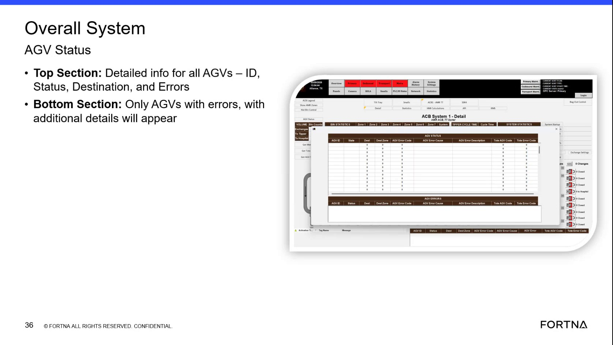

| Procedure ID | proc_review_fleet_status_on_the_overall_system_agv_status_screen_v1 |
|---|---|
| Title | Review Fleet Status On the Overall System AGV Status Screen |
| Procedure Type | diagnostic |
| Primary Role | L1_support |
| Support Safe | Yes |
| Validation Status | needs_sme_review |
| Merge Status | source_finalized |
Use the Overall System AGV Status screen to review fleet-wide AGV information. The source describes a top section with detailed information for all AGVs and a bottom section that shows only AGVs with errors, allowing the user to identify AGVs currently reported with errors.
Use when reviewing fleet-level AGV status and identifying which AGVs are currently shown with errors on the Overall System AGV Status screen.
Responsible role: L1_support
Instruction:
Open or navigate to the screen labeled "Overall System AGV Status."
Expected result:
The Overall System AGV Status screen is visible.
Screens / Images:

Stop or Escalate If:
Responsible role: L1_support
Instruction:
Review the top section, which shows detailed information for all AGVs.
Expected result:
The top section displays the fleet-wide AGV detail area.
Screens / Images:
Stop or Escalate If:
Responsible role: L1_support
Instruction:
For each AGV entry, check the fields listed by the source: ID, Status, Destination, and Errors.
Expected result:
Each AGV entry is reviewed using the documented fields.
Screens / Images:
Stop or Escalate If:
Responsible role: L1_support
Instruction:
Review the bottom section, which is dedicated to only AGVs with errors.
Expected result:
The bottom section shows the AGVs currently listed with errors.
Screens / Images:
Stop or Escalate If:
Responsible role: L1_support
Instruction:
Compare the AGVs shown in the bottom section against the detailed information visible in the top section to identify which AGVs currently have reported errors.
Expected result:
The AGVs currently shown with errors are identified.
Screens / Images:
Stop or Escalate If: